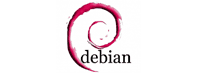

현재 미러링 목록
-
Apache는 HTTP 서버를 포함한 아파치 소프트웨어 프로젝트를 말합니다. Ant, iBATIS, Maven 등 다양한 오픈소스 프로젝트들이 있습니다.
FTP 바로가기 사이트 바로가기 -
레드헷 계열 오픈소스 프로젝트 중 하나인
FTP 바로가기 사이트 바로가기
CentOS는 Redhat Enterprise Linux AS 기반의 리눅스 배포판입니다. -

CPAN이란 펄 소프트웨어와 문서들을 모아놓은 사이트 입니다.
FTP 바로가기 사이트 바로가기 -
CRAN이란 R 소프트웨어와 문서들을 모아놓은 사이트 입니다.
FTP 바로가기 사이트 바로가기 -
윈도우즈 환경에서 리눅스를 사용할 수 있는 프로그램입니다.
FTP 바로가기 사이트 바로가기 -

데비안은 리눅스로부터 커널과 GNU 프로젝트의 여러 프로그램 구성요소를 사용한 OS입니다.
FTP 바로가기 사이트 바로가기 -
eclipse는 오픈소스이며 Java 기반의 확장 가능한 개발 플랫폼입니다.
FTP 바로가기 사이트 바로가기 -

Gentoo Linux는 Portage 시스템 기반의 최적화에 알맞은 리눅스 배포판입니다.
FTP 바로가기 사이트 바로가기 -
Mozilla는 Firefox 웹 브라우저와 Thunderbird 메일프로그램을 만드는 오픈 소스 프로젝트입니다.
FTP 바로가기 사이트 바로가기 -
오픈수세(openSUSE)는 일반적으로 사용 가능한, 리눅스 커널을 기반으로 제작된 운영 체제입니다.
FTP 바로가기 사이트 바로가기 -
루비포지(RubyForge)는 협력 리비전 제어 및 소프트웨어 개발 관리 시스템이며 루비 (프로그래밍 언어)와 관련된 프로젝트를 호스팅합니다.
FTP 바로가기 사이트 바로가기 -
우분투(Ubuntu)는 데스크톱에서 리눅스를 쉽게 사용할 수 있게 만든 리눅스 배포판입니다.
FTP 바로가기 사이트 바로가기